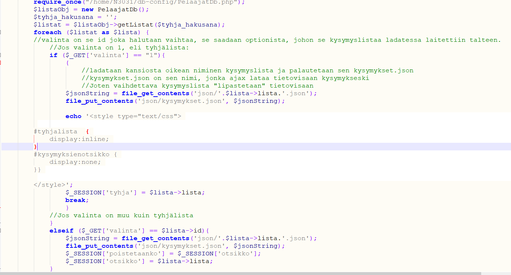

Kimmo Korhonen N3031
Harjoitustyö
13.11.2020
Harjoitustyö Tunnus: yllapito Salasana: yllapitoWeb-palvelinohjelmoinnin (TTMS0900) opintojakson harjoitustyönä oli määrä opintojakson aihealueeseen liittyvä palvelinpuolen web-sovellus. Harjoitustyön tavoitteena oli oppia soveltamaan ja osoittamaan aihealueen hallintaa laajemmin ja syvemmin, kuin jakson tehtävissä vaadittiin.
Harjoitustyön aihe on verkkosivun, tietovisan hallinnointi: Kysymyksien lisäys, muokkaus ja poisto, käyttäjien rekisteröinti ja pisteiden nollaaminen, sekä käyttäjien poistaminen. Kysymyksien lisääminen ja muokkaaminen tapahtuu JSON-tiedostoja muokkaamalla tai lisäämällä, ja käyttäjien hallinnointi tapahtuu relaatiotietokantaa hyväksi käyttäen. Kysymyssarjojen, JSON-tiedostojen otsikot, sekä pelaajien nimet, salasanat ja pisteet ovat tietokannassa. Alla kaaviokuvat tietokannasta ja sovelluksesta:
Kirjautumalla sivustolle yllapidon tunnuksilla, aukeaa päänäkymä, jossa sivun palvelinpuolen toiminnallisuutta päästään muokkaamaan. Päänäkymä:
Alkuu sivulla voi rekisteröidä uuden pelaajan: "Lisää uusi pelaaja", listata tietokannassa olevien kysymyslistojen nimet - itse kysymykset sijaitsevat JSON-tiedostoissa json-kansiossa, sekä listata tietokannassa olevien pelaajien nimet ja pisteet. Uuden pelaajan lisäyksessä, selain latautuu rekisteröinti-sivulle, jossa luodaan pelaajan tunnus, eli nimi ja salasana. Sivu lähettää tiedot DP-funktioon, joka tallentaa nimen, salasanan ja pisteet (oletus 0 pistettä) tietokantaan. Alla osa rekisteröinti-sivun ja DP-funktion ohjelmakoodia:
Kun pelaajat tai kysymyslistat listataan, ohjelma hakee pelaajien nimet ja pisteet, tai kysymyslistojen nimet tietokannasta, ja listaa ne. Tämän jälkeen on mahdollista poistaa valittu pelaaja, nollata pelaajien pisteet tai ladata valittu kysymyslista tietovisaan, poistaa kysymyslista tai luoda uusi kysymyslista. Uuden kysymyslistan luonti tapahtuu valitsemalla listatuista kysymyslistoista "Tyhjä"-listan. "Lataa lista", ohjelma lataa valitun kysymyslistan tietovisaan kysymyksiksi. Alla kuvat kysymyssarjan lataamisesta, listatuista pelaajista ja Kertotaulu-nimisestä valitusta kysymyslistasta.

Kun kysymyslista on ladattu, on käyttäjän mahdollista listata ladatun kysymyslista sisältävät kysymykset, ja/tai lisätä listaan uusi kysymys täyttämällä lomake:
Pelaajan kirjauduttua tietovisaan, ohjelma lataa tietokannasta pelaajan pisteet ja tallentaa ne Sessio-muuttujaan, jota päivitellään pelaajan kerrytettyä pisteitä pelaamisen aikana. Pelaajan kirjauduttua ulos, Sessio-muuttujassa olevat pisteetä ladataan tietokantaan. Alla kuvat pisteiden latauksesta tietokannasta, ja pelaamisen jälkeen, pisteiden päivittämisestä:
Tälläisen pienen kokonaisuuden rakentaminen on oppimista parhaimmillaan. Suunnittelun tärkeyttä ei voida vähätellä, joka tässä harjoitustyössä ei toteutunut, koska ominaisuudet kasvoivat työn edetessä ja alkuperäinen suunnitelma ylittyi reilusti. Isoin yksittäinen haaste oli pisteiden kerääminen. Itse tietovisa pyörii JS-tiedostossa, joten, se, kuinka pisteitä kerätään ja päivitellään tietokantaan oli oma haasteensa. Lopulta päädyin siirtämään pisteitä urlissa, väli-sivulautauksen kautta, jotta urlia ei kerkeä näkemään. Tämä siksi, ettei pisteiden keruuta voi lähteä manipuoloimaan urlin kautta. Lisäksi vaihdettu kysymyslista ei aina heti automaattisesti vaihdu itse peliin, johtuen välimuistista, tai palvelimen viiveestä. ctr+shift+r tosin auttaa onglemaan, mutta vähän se jäi häiritsemään.
Aikaa meni n. 45h ja siitä suuri osa meni yksittäisten virheiden ja ongelmien ratkontaan. Hiukanhan tämä jäi nyt kesken. Suurin ongelma on se, kun ladataan tyhjä kysymyslista jotta voidaan lisätä sinne kysymyksiä, ohjelma lataa tämän tyhjän listan myös tietovisaan kysymyksiksi. Ja jos listassa on alle 10 kysymystä ohjelma ei toimi, vaan palauttaa etusivun. Itse käyttöliittymän kannalta tämä olisi pitänyt tehdä erillisenä ohjelmana, mutta halusin tuoda sen mahdollisuuden kuitenkin tähän, että listoja voi myös luoda. Käyttöliittymä ja koodi on hiukan sekavaa ja mm. tietovisan aikalaskurin muuttaminen olisi pitänyt ohjelmoida säädettäväksi tämän kautta. Sain ympättyä tähän kuitenkin aika paljon ominaisuuksia ja jakson asioita, joita pääsin soveltamaan, vaikka, varsinkin tietokantaan liittyvät ohjelmoinnit olivat materiaaleissa valmiina, eikä niitä tarvinnut kovinkaan runsaasti muutella. Ihan en voi täysiä pisteitä itselleni antaa, mutta sen verta työläs, ominaisuuksiltaan rikas ja pienestä sekavuudestaan huolimatta toimiva sovellus, antaisin arvosanaksi 4,5.